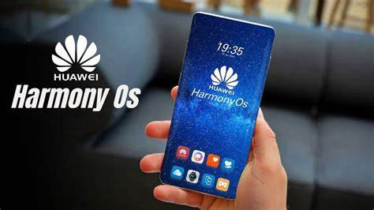

Segurança
Para garantir mais ainda a segurança, o acesso à câmera, microfone e localização, por exemplo, não é disponibilizado aos demais aparelhos, protegendo o usuário de eventuais invasões. Por fim, a empresa acrescenta que certificações de segurança internacionais são a base do seu sistema, portanto, os usuários não precisam se preocupar tanto com ameaças digitais.
Desempenho
Tendo como foco o desempenho, segundo a Huawei, o HarmonyOS foi otimizado desde o kernel, que é a base do sistema operacional, para garantir que o usuário tenha fluidez mesmo em dispositivos mais antigos.
